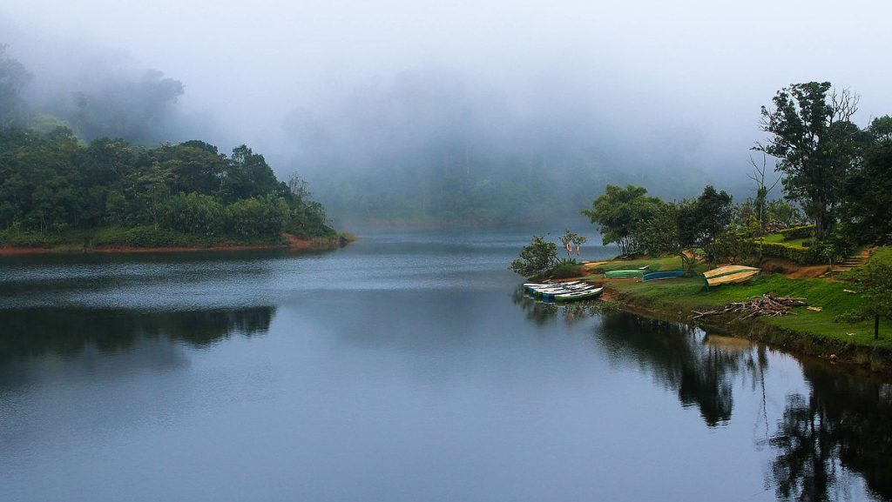

Gavi Eco Tourism:
Gavi is an Eco-Tourism a project of the Kerala Forest Development Corporation located in Pathanamthitta district, Kerala. Gavi, located in Pathanamthitta district offers its visitors activities like trekking, wildlife watching, outdoor camping in specially built tents, and night safaris. Distance from Pathanamthitta To Gavi is 109 km 428 mtrs & Travel Time is 2 hour 5 mins By Road. Gavi is 14 km south west of Vandiperiyar, 28 km from Kumily, near Thekkady. Gavi is inside the Ranni reserve forest. Gavi is a part of Seethathode Panchayath in Ranni Taluk. Gavi is part of the Periyar Tiger Reserve, and the route can be covered by car from Vandiperiyar. The entrance fee is 25 rupees per person and 50 rupees per vehicle. Cameras are 25 rupees and video cameras are charged 100 rupees. Both day and night stays are available. Forest tent camping is available from November through March. It has been said that most enjoyable route to Gavi is the way from Pathanamthitta. The rough journey to Gavi may better be made on a sturdy vehicle like a jeep. Entry passes must be obtained from the Forest Check Post en route at Vallakkadavu. Advance booking with the Kerala Forest Development Corporation Ltd. is highly appreciable wherein such formalities will be taken care of by the company itself.
Sabarimala:

Sabarimala Sree Dharma Sastha Temple, dedicated to Lord Ayyappa, is the most famous and prominent among all the Sastha temples in Kerala. The temple is situated on a hilltop (about 3000 feet above sea level) named Sabarimala in Pathanamthitta district, which is unique. The temple is open to people belonging to all religions. There is a place near the temple; east of Sannidhanam (the abode of Lord Ayyappa), dedicated to Vavar (a close friend of Lord Ayyappa) which is called Vavaru Nada, an epitome of religious harmony. Another unique aspect of this temple is that it is not open throughout the year. It is open for worship only during the days of Mandalapooja, Makaravilakku, Vishu and also during the first day of every Malayalam month. It is said that the pilgrims have to observe celibacy for 41 days before going to Sabarimala. Pilgrims take the traditional forest routes as well as the one from Pamba which is less physically challenging to reach the temple.